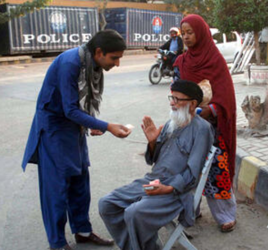
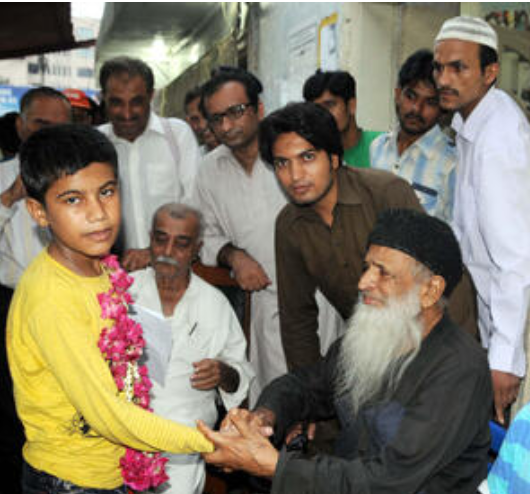
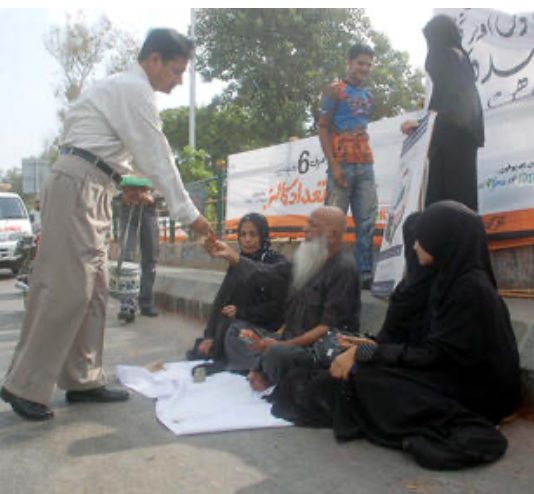
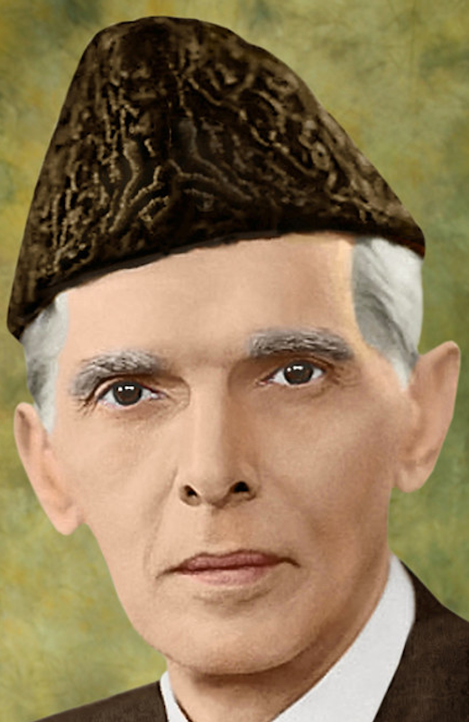
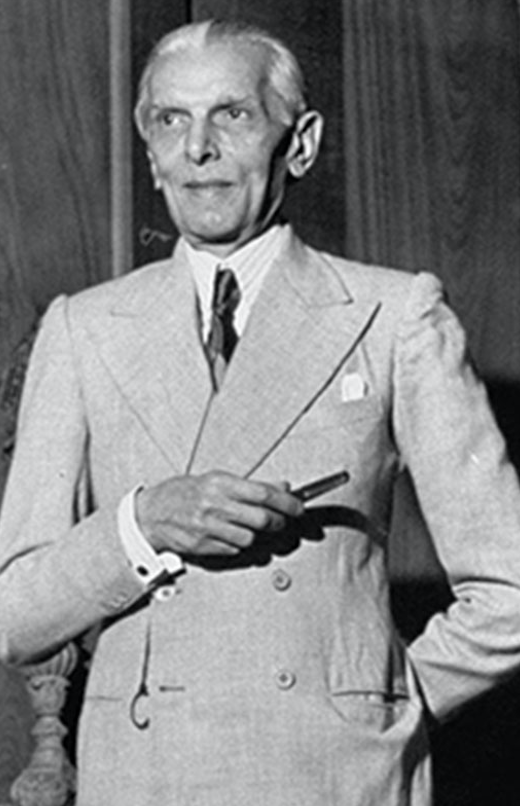

Tariq Jamil was born on 1 October 1953 in Mian Channu, Pakistan.[1] Jamil belongs to the Sahu subtribe of Chauhan Rajputs. His family ruled Tulamba during the reign of Sher Shah Suri, who also distributed the lands around Tulamba.[5]
Jamil completed his primary education at Central Model School, Lahore. He is an alumnus of Government College University, Lahore, and received his Islamic education from Jamia Arabia, Raiwind, where he studied the Qur’an, hadiths, Sufism, logic, and fiqh.[4][6]
Jamil enrolled in King Edward Medical College after finishing a pre-medical education from Government College Lahore, but he left the college without completing his MBBS when he decided to pursue religious education.[7][6]
Jamil's sermons focus on "self-purification, avoidance of violence, observance of Allah’s orders and pursuing the way of Prophet Muhammad".[4]
Jamil was consistently named as one as of The 500 Most Influential Muslims in the world by the Royal Aal al-Bayt Institute for Islamic Thought in Jordan from 2013 to 2019.
Besides praying for the welfare of the country and an end to vice, he said "when a Muslim’s daughter practices immodesty and the youth(boys) indulges in immorality, then Allah’s torment is unto such a nation."
Abdul Sattart Edhi



Abdul Sattar Edhi was born in 1928 in a small village of Bantva near Joona Garh, Gujrat (India). The seeds of compassion for the suffering humanity were sown in his soul by his mother’s infirmity. When Edhi was at the tender age of eleven, his mother became paralysed and later got mentally ill. Young Abdul Sattar devoted himself for looking after all her needs; cleaning, bathing, changing clothes and feeding. This proved to be a loosing battle against the disease, and her helplessness increased over the years.
In 1947, after partition of the former British colony into two separate independent states, India and Pakistan, Abdul Sattar Edhi's family, who were Muslims, moved to Pakistan.
In 1974 Abdul Sattar Edhi establishes the Edhi Foundation which over the years has become the largest and best organized social welfare system in Pakistan and in the Third World.
Edhi involves himself in every activity at Edhi Foundation from raising funds to bathing corpses. Round the clock he keeps with him an ambulance which he drives himself and makes rounds of the city regularly. On finding a destitute or an injured person any where on the way, he escorts him to the Relief Centre where immediate attention is given to the needy person.
The Edhi Foundation operates on the basis of local volunteers and through private donations, in a spirit of tolerance and solidarity that goes beyond racial and religious barriers.
With his wife Bilquis Abdul Sattar Edhi is still working in Karachi where his organisation helps the poorest and the most destitute, not only in Pakistan but also in other Third World countries.
Dr Abdul Qadeer Khan
Abdul Qadeer Khan, also known as A.Q. Khan, (born April 1, 1936, Bhopal, India—died October 10, 2021, Islamabad, Pakistan), Pakistani engineer, a key figure in Pakistan’s nuclear weapons program who was also involved for decades in a black market of nuclear technology and know-how whereby uranium-enrichment centrifuges, nuclear warhead designs, missiles, and expertise were sold or traded to Iran, North Korea, Libya, and possibly other countries.
In 1947, during Khan’s childhood, India achieved independence from Britain, and Muslim areas in the east and west were partitioned to form the state of Pakistan. Khan immigrated to West Pakistan in 1952, and in 1960 he graduated from the University of Karachi with a degree in metallurgy.Over the next decade he pursued graduate studies abroad, first in West Berlin and then in Delft, Netherlands, where in 1967 he received a master’s degree in metallurgy. In 1972 he earned a doctorate in metallurgical engineering from the Catholic University of Leuven in Belgium.
Bhutto met Khan in December 1974 and encouraged him to do everything he could to help Pakistan attain the bomb. Over the next year Khan stole drawings of centrifuges and assembled a list of mainly European suppliers where parts could be procured. On December 15, 1975, he left the Netherlands for Pakistan, accompanied by his wife and two daughters and carrying his blueprint copies and suppliers list.
Quaid e Azam
lorem30

Born on December 25, 1876, in a prominent mercantile family in Karachi and educated at the Sindh Madrassat-ul-Islam and the Christian Mission School at is birth place.

Jinnah was the one who was elected to the newly-constituted Imperial Legislative Council (IGL). All through his parliamentary career, which spanned some four decades.
Quaid-e-Azam had a keen sense of fashion. Different sources indicate that he never wore the same tie twice in a court room. Even on the death bed he maintained his formal dressing.
At one point, Muhammad Ali Jinnah seriously tried a career shift and even reached a theater group in London. But he gave up the idea and ultimately, continued his law practice.